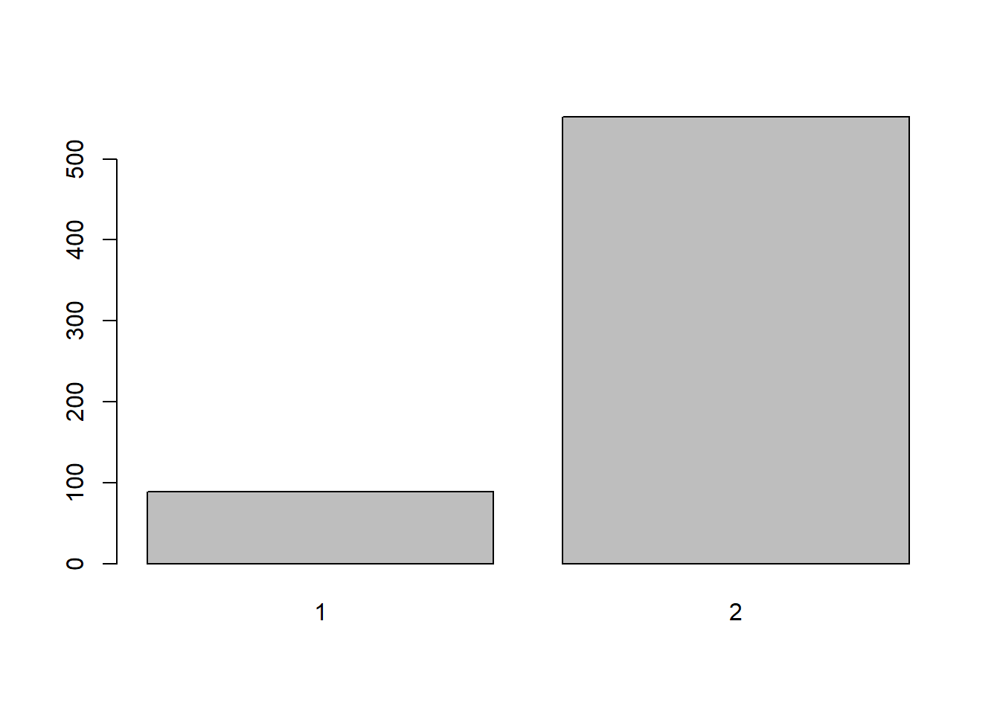
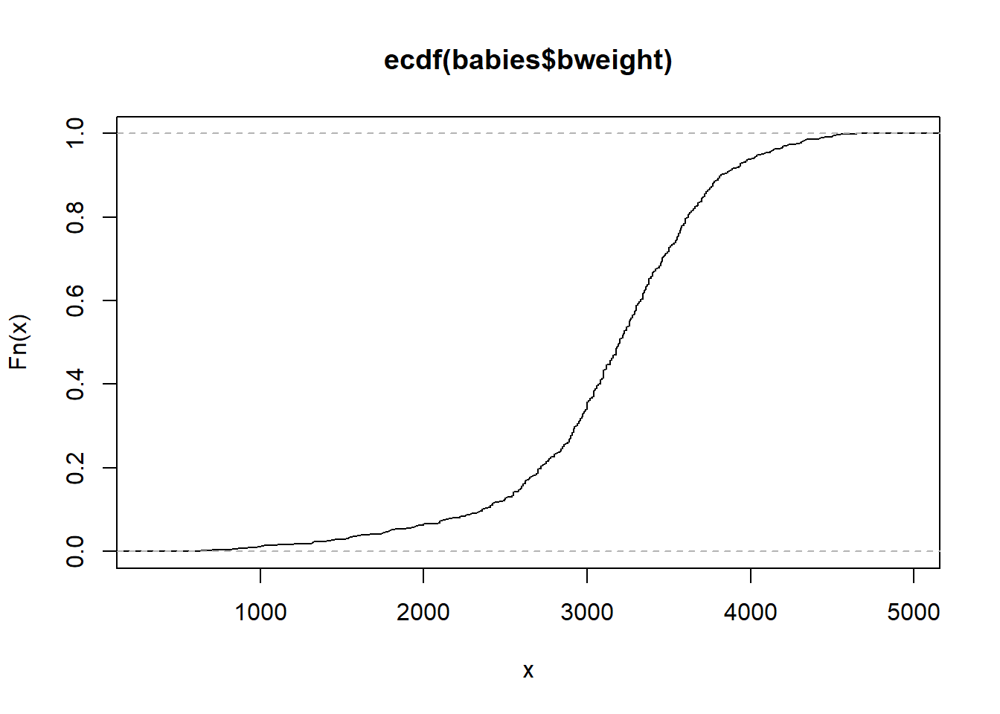
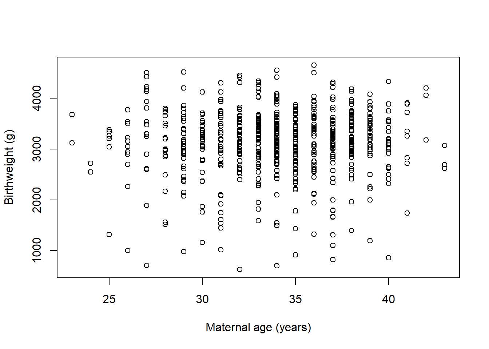

Code
library(rio)
library(tidyverse)In this practical, we will use R to summarise and present the data discussed in CAL session SC02.
Packages required for WB02
library(rio)
library(tidyverse)Import the babies dataset.
babies <- import("babies.csv")We will use bar charts to display the distributions of categorical variables and histograms to display the distributions of quantitative variables.
We wish to create a bar chart for the hypertension variable. In this practical, we will use plotting commands from base R. A very flexible alternative is using the library ‘ggplot2’.
First, count how many times each category of hyp appears in the dataset and store the result in an object called counts
counts <- table(babies$hyp)
counts
1 2
89 552 Use the barplot() function to draw the bar chart
barplot(counts)
To save the plot as an image file you can use the png() command as below. This puts the output of the barplot() command into a png file named ‘practical2-plot1.png’. The png file is saved to your working directory.
png("practical2-plot1.png")
barplot(counts)
dev.off()There are several ways to improve the bar chart. For example, we can add axis labels and colour the bars.
barplot(
counts,
col = c("red", "blue"),
xlab = "Hypertension",
ylab = "Frequency"
)We may also want to generate a plot of the percentage of observations in each category of hypertension.
percent <- counts * 100 / sum(counts)
barplot(
percent,
col = c("red", "blue"),
xlab = "Hypertension",
ylab = "Percentage"
)To obtain a histogram for a quantitative variable, use the hist() command. Try this for birthweight.
hist(babies$bweight)Again, there is room for improvement in this histogram. We use the breaks argument to specify the number of bars in our chart. We can also set the axis labels with xlab, like we did for our barplot.
hist(
babies$bweight,
breaks = 5,
xlab = "Birthweight (g)"
)hist() defaults to showing the frequency of observations in each interval. If we want to look at the probability density of observations in each bar (so the area of each bar relates to the number of observations), we can set the argument freq=FALSE.
hist(
babies$bweight,
breaks = 5,
xlab = "Birthweight (g)",
freq = FALSE
)In this plot, the area of the bars reflects the number of observations in them. You can vary the number of bars in the histogram by adding, for example, breaks = 12.
hist(
babies$bweight,
breaks = 12,
xlab = "Birthweight (g)",
freq = FALSE
)You will notice that there are actually only 9 bars in the plot although we asked for 12 breaks. This is because when you specify a single number for breaks, the hist() function treats it as a suggestion. To control the number of bars more precisely you need to set a sequence of values for the breaks. We can make a sequence from the minimum bweight to maximum using seq(from=min(babies𝑏𝑤𝑒𝑖𝑔ℎ𝑡), 𝑡𝑜 = 𝑚𝑎𝑥(𝑏𝑎𝑏𝑖𝑒𝑠 bweight), length.out=13) (Note, if there are 13 breaks there are 12 bars).
hist(
babies$bweight,
breaks = seq(
from = min(babies$bweight),
to = max(babies$bweight),
length.out = 13
),
xlab = "Birthweight (g)",
freq = FALSE
)We can superimpose a normal curve on the plot using the curve() function.
hist(
babies$bweight,
breaks = seq(
from = min(babies$bweight),
to = max(babies$bweight),
length.out = 13
),
xlab = "Birthweight (g)",
freq = FALSE
)
curve(
dnorm(
x,
mean = mean(babies$bweight),
sd = sd(babies$bweight)
),
add = TRUE
)For a histogram of continuous quantitative data that are recorded as discrete quantities (e.g. maternal age), we may want to specify the bin width as 1. To do this, we can use another sequence from minimum to maximum maternal age: seq(from=min(babies𝑚𝑎𝑡𝑎𝑔𝑒), 𝑡𝑜 = 𝑚𝑎𝑥(𝑏𝑎𝑏𝑖𝑒𝑠 matage), by=1).
hist(
babies$matage,
breaks = seq(
from = min(babies$matage),
to = max(babies$matage),
by = 1
),
xlab = "Maternal age (years)"
)To produce plots of cumulative distributions for quantitative data, you can use the ecdf() function, which calculates the Empirical Cumulative Distribution Function.
plot(
ecdf(babies$bweight),
do.points = FALSE,
verticals = TRUE
)
There are two arguments specified in plot() that change how the ECDF is displayed. What happens if you change them from TRUE to FALSE or vice versa? The smallest value for bweight is 630g (we can obtain this using the command min(babies$bweight)). We can see the value of the ECDF curve using this code.
ecdf(babies$bweight)(630)[1] 0.001560062To display a scatterplot of the relationship of two continuous variables, we simply enter both variables in the plot() command. Try this with birthweight and maternal age.
plot(
babies$matage,
babies$bweight,
xlab = "Maternal age (years)",
ylab = "Birthweight (g)"
)